Lesen und Leseverstehen: Arbeitsblätter für Klasse 1–6 (Deutsch)
Lesen steht im Zentrum der Grundschule. Neben Lesetechnik zählen Verstehen, Lesemotivation und Leseflüssigkeit; gute Förderung verbindet Texte mit Aufgaben und kleinen Erfolgserlebnissen.
Zum Themenkern zählen Lesetechnik, Leseverstehen und Textfragen. Als Vertiefung bieten sich Lösungswort und Vorlesen an, am Ende steht oft Lesefluss.
Im Fach Deutsch gehört das Thema nach den Lehrplänen der Länder zum festen Programm, überwiegend in den Klassen 1 bis 6. Die Kinder lesen zunehmend flüssig, beantworten Fragen zum Text und begründen ihre Antworten.
Im Alltag einer Lehrkraft zählt, dass Material sofort einsatzbereit ist: Die Blätter zu Lesen und Leseverstehen greifen Leseverstehen, Textfragen und Lösungswort auf, lassen sich ausdrucken und kommen mit Lösungen, damit die Vorbereitung kurz bleibt. Die Lückentexte mit Hörverstehen verbinden Lesen, Hören und Schreiben.
Aus unserem Katalog gehören 44 Materialien zu diesem Thema, darunter DaZ & Leseförderung Materialpaket, Winter-Lesewelten Materialpaket: 3 Einheiten und Lesewinter Materialpaket Klasse 2, 3 und 4: 30. Der Bestand umfasst 24 Lesespaziergänge und 1 Lückentext mit Hörverstehen und reicht über Klasse 1–7. Täglich zehn Minuten Lesezeit mit Lesetagebuch wirken stärker als ein langer Lesetag pro Woche.
Das gehört zum Thema
Passende Arbeitsblätter und Materialpakete
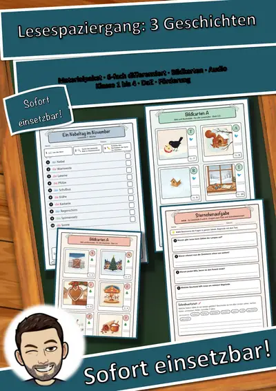
Lesespaziergang Materialpaket: 3 Geschichten, 6-fach differenziert – Herbst, Advent, Winter (Klasse 1–4, DaZ)
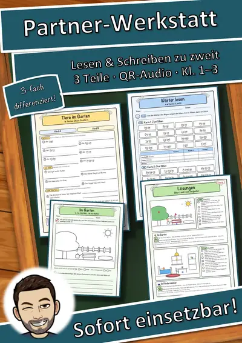
DaZ & Leseförderung Materialpaket: Partner-Werkstatt – Partnerdiktat, Hör-Mal-Bilder, Lese-Fitness-Pass (3 Niveaus, QR-Audio)
Winter-Lesewelten Materialpaket: 3 Einheiten – Differenziertes Lesetraining für die Grundschule (Grundschule, Klasse 1–3

Lesewinter Materialpaket Klasse 2, 3 und 4: 30 Wintertexte in je 3 Stufen – tägliche Lesezeit, Lesefluss-Training, Hörfassung (einmal zahlen)

Lesespaziergang Vögel am Futterhaus – 6-fach differenziert mit Bildkarten, Sternchenaufgaben und Audio (Klasse 1–4)
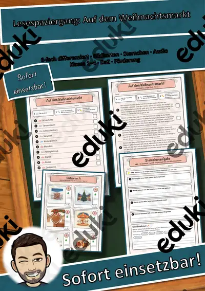
Lesespaziergang Auf dem Weihnachtsmarkt – 6-fach differenziert mit Bildkarten, Sternchenaufgaben und Audio (Klasse 1–4)
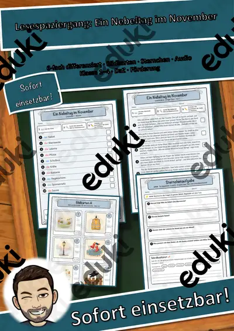
Lesespaziergang Ein Nebeltag im November – 6-fach differenziert mit Bildkarten, Sternchenaufgaben und Audio (Klasse 1–4)
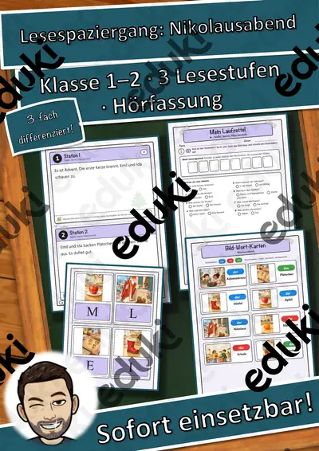
Lesespaziergang Nikolausabend: Stiefel, Sterne, Plätzchenduft – 8 Stationen in 3 Lesestufen mit Hörfassung (Klasse 1–2, DaZ)
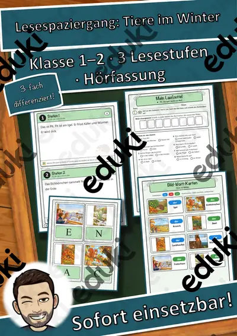
Lesespaziergang Tiere im Winter: Pit, der Igel, sucht ein Bett – 8 Stationen in 3 Lesestufen mit Hörfassung (Klasse 1–2, DaZ)
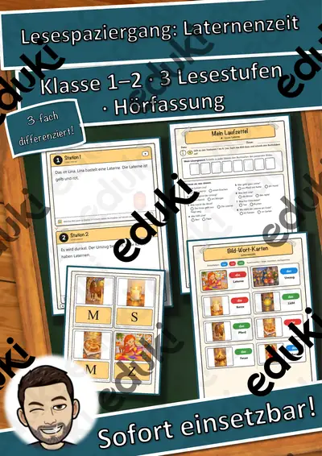
Lesespaziergang Laternenzeit: Linas Laterne – 8 Stationen in 3 Lesestufen mit Hörfassung (Klasse 1–2, DaZ)
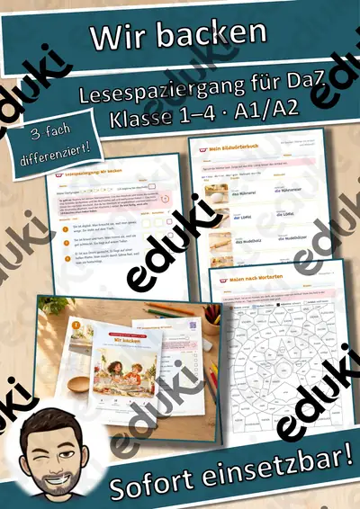
Lesespaziergang DaZ: Wir backen – Wortschatz mit Rätseln, 3-fach differenziert (Klasse 1–4)
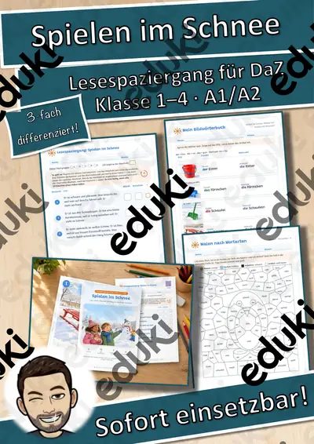
Lesespaziergang DaZ: Spielen im Schnee – Wortschatz mit Rätseln, 3-fach differenziert (Klasse 1–4)
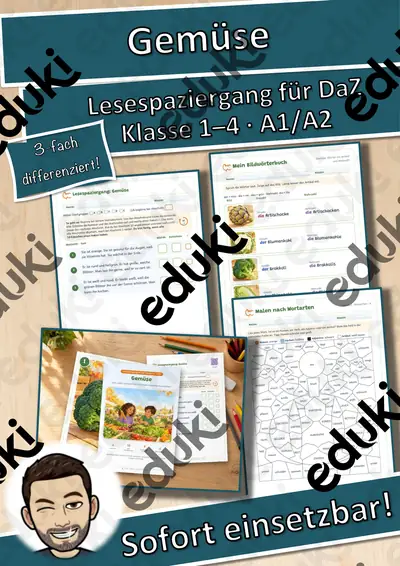
Lesespaziergang DaZ: Gemüse – Wortschatz mit Rätseln, 3-fach differenziert (Klasse 1–4)
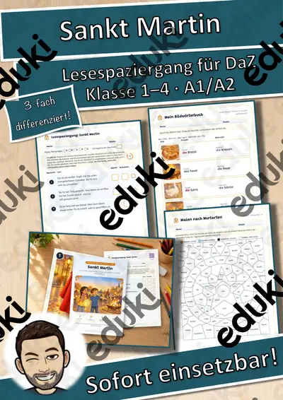
Lesespaziergang DaZ: Sankt Martin – Wortschatz mit Rätseln, 3-fach differenziert (Klasse 1–4)
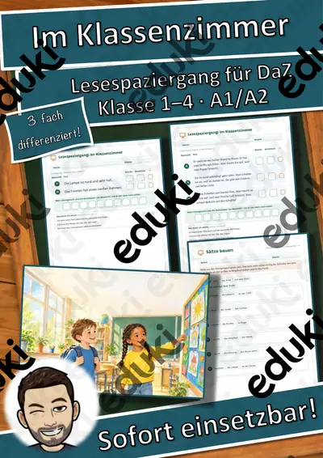
Lesespaziergang DaZ: Im Klassenzimmer – Wortschatz mit Rätseln, 3-fach differenziert (Klasse 1–4)
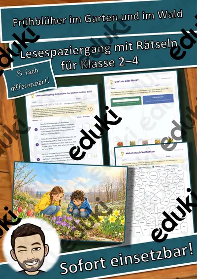
Lesespaziergang: Frühblüher im Garten und im Wald – 3-fach differenziert (★/★★/★★★), Klasse 2–4
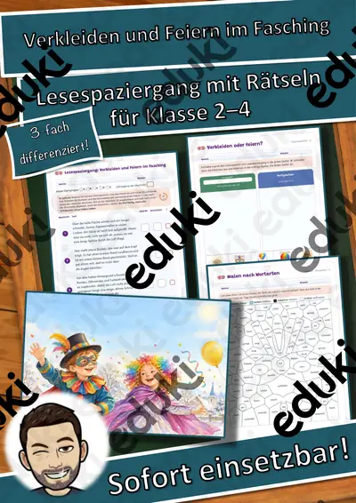
Lesespaziergang: Verkleiden und Feiern im Fasching – 3-fach differenziert (★/★★/★★★), Klasse 2–4
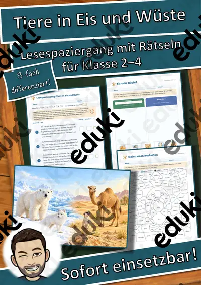
Lesespaziergang: Tiere in Eis und Wüste – 3-fach differenziert (★/★★/★★★), Klasse 2–4
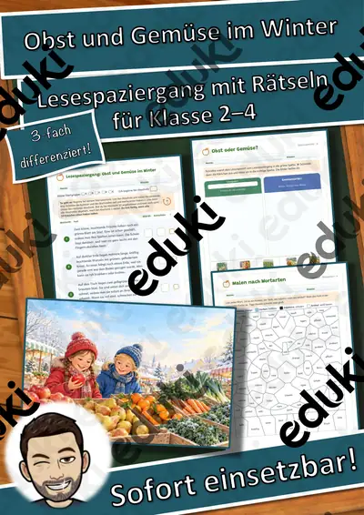
Lesespaziergang: Obst und Gemüse im Winter – 3-fach differenziert (★/★★/★★★), Klasse 2–4
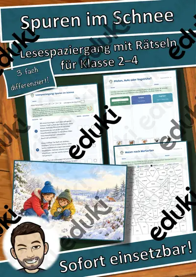
Lesespaziergang: Spuren im Schnee – 3-fach differenziert (★/★★/★★★), Klasse 2–4
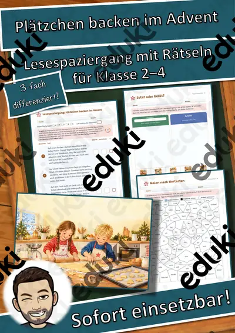
Lesespaziergang: Plätzchen backen im Advent – 3-fach differenziert (★/★★/★★★), Klasse 2–4
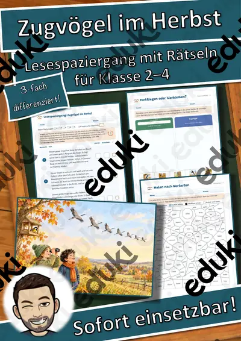
Lesespaziergang: Zugvögel im Herbst – 3-fach differenziert (★/★★/★★★), Klasse 2–4
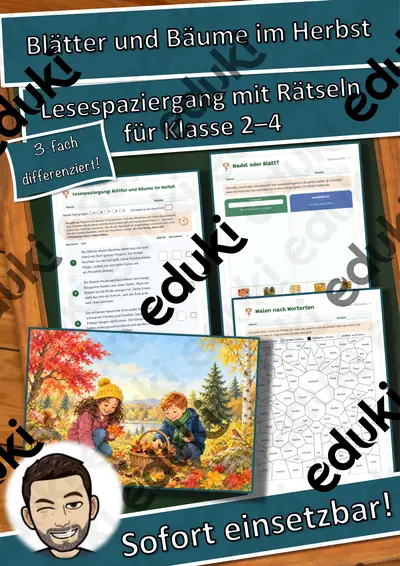
Lesespaziergang: Blätter und Bäume im Herbst – 3-fach differenziert (★/★★/★★★), Klasse 2–4
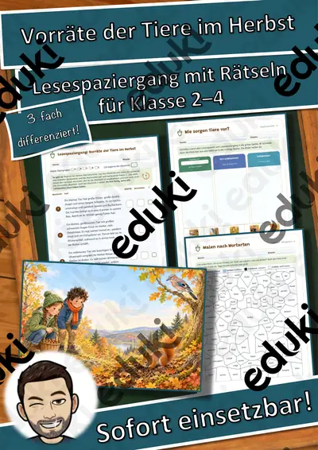
Lesespaziergang: Vorräte der Tiere im Herbst – 3-fach differenziert (★/★★/★★★), Klasse 2–4
Weitere 20 Materialien zum Thema im Material-Finder.
Häufige Fragen
Für welche Klassenstufe passen die Arbeitsblätter zu Lesen und Leseverstehen?
Die 44 Materialien zu diesem Thema sind für Klasse 1–7 ausgelegt, die meisten davon für Klasse 2. Einzelne Titel lassen sich mit Anpassung auch eine Stufe darunter oder darüber einsetzen.
Welche Inhalte decken die Materialien zu Lesen und Leseverstehen ab?
Die Materialien arbeiten an Lesetechnik, Leseverstehen und Textfragen und gehen dann weiter zu Lösungswort, Vorlesen und Lesefluss. Vorab lohnt ein Blick in den Lehrplan des eigenen Bundeslandes.
Wie setze ich Lesen und Leseverstehen im Unterricht ein?
Täglich zehn Minuten Lesezeit mit Lesetagebuch wirken stärker als ein langer Lesetag pro Woche. So entsteht aus den Blättern eine kleine Einheit, die sich auf zwei bis drei Stunden verteilen lässt.
Mehr Material nach Fach und Klasse
- Alle Materialien Deutsch
- Arbeitsblätter Deutsch Klasse 1
- Arbeitsblätter Deutsch Klasse 2
- Arbeitsblätter Deutsch Klasse 3
- Arbeitsblätter Deutsch Klasse 4
- Arbeitsblätter Deutsch Klasse 5
- Arbeitsblätter Deutsch Klasse 6
- Unterrichtsmaterial Klasse 1
- Unterrichtsmaterial Klasse 2
- Unterrichtsmaterial Klasse 3
- Unterrichtsmaterial Klasse 4
- Unterrichtsmaterial Klasse 5
- Unterrichtsmaterial Klasse 6
Verwandte Lehrplanthemen
- DaZ: Wortschatz für den Alltag (DaZ/DaF, Klasse 1–8)
- Jahreszeiten (Sachunterricht, Klasse 1–4)
- Märchen (Deutsch, Klasse 1–5)
- Rechtschreibung und Diktate (Deutsch, Klasse 1–8)
- Wortarten (Deutsch, Klasse 2–7)